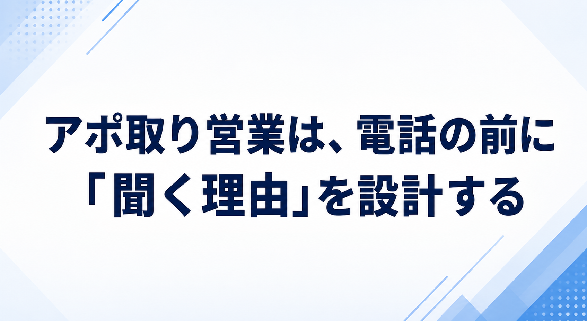
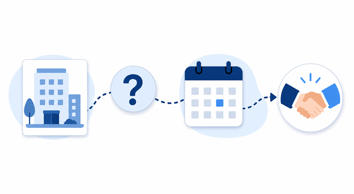
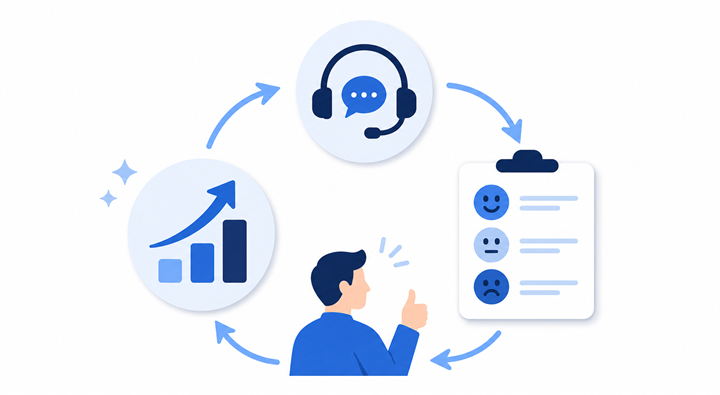

みなさんこんにちは、Valorize AI代表の鈴木創也です。
営業でアポ取りをしていると、「トークを磨けばもっと取れるはず」「断られたときの切り返しを覚えれば何とかなるはず」と考えたくなる場面があります。
もちろん、話し方や言葉選びは大切です。電話口で用件が伝わらなければ、相手は話を聞く前に離れてしまいます。
ただ、BtoB営業でアポ取りがうまくいかないとき、原因は電話中の会話だけにあるとは限りません。電話をかける前の相手選び、顧客理解、課題仮説、伝える価値、日程調整、記録の残し方によって、相手が「この話を聞く必要がある」と判断できるかどうかは変わります。
この記事では、営業のアポ取りを「電話口で粘る技術」ではなく、「相手が今この話を聞く理由を設計する営業前工程」として整理します。
アポ取り営業とは
アポ取り営業とは、見込み客と商談や情報交換の機会を設定し、営業会話を始めるための活動です。
ここで大事なのは、アポ取りを単なる日程調整と考えないことです。日程を押さえることだけが目的になると、相手は「なぜ自分が会う必要があるのか」を判断できません。
たとえば、次のような状態では、会う約束は取れても、商談の中で具体的な検討に進みにくくなります。
- 相手の業種や状況を十分に把握できていない
- 誰にでも同じ説明をしている
- 商品説明の時間をもらうことが目的になっている
- 相手が得られる情報や判断材料が明確ではない
この4点に共通しているのは、相手側の判断材料が不足していることです。営業側は「説明したい」と思っていても、相手側からすれば、自社の課題と関係がある話なのか、今聞く必要がある話なのかを判断しにくくなります。
営業のアポ取りは、相手にとって話を聞く理由を作り、営業活動の入口を整える仕事です。

営業でアポ取りが重要な理由
アポ取りが重要なのは、見込み客との接点を作り、商談化の可能性を開く起点になるからです。
一方で、今のBtoBの買い手は、営業担当者に会う前から多くの情報を自分で調べられます。製品サイト、比較記事、導入事例、SNS、資料ダウンロードなど、検討に必要な情報へ先に触れていることも珍しくありません。
米国の大手調査・アドバイザリー企業であるGartnerが、2024年8月から9月に632人のBtoB買い手を対象に実施した調査では、61%が全体として営業担当者を介さない購買体験を好み、73%が関係のない営業アプローチを送る供給企業を積極的に避けると回答しています。
同じ公式発表では、一般情報を探したり、新しい知識を得たりする場面では、買い手は販売者よりオンラインのセルフサービスを好むと説明されています。一方で、製品やサービスが自社のニーズに合うかを判断するなど、個社の状況に応じた判断が必要な場面では、販売者の意見を求める傾向があります。
つまり、買い手が販売者に求める関わり方は、購買業務によって異なります。営業担当者には、オンラインでも得られる一般情報を繰り返すのではなく、相手企業の状況を踏まえた助言や判断支援を提供する役割があります。
アポ取りの価値は、一般情報を説明する時間を確保することではありません。相手企業の状況に応じた判断支援を行う機会を作ることにあります。
アポ取りがうまくいかない理由
アポ取りがうまくいかない理由は、話し方だけではありません。よくある原因は、次の4つに分けられます。
1. 相手選びの問題
- 自社の提案と関係が薄い企業に連絡している
- 役職や担当領域が合っていない
- 既存の接点や検討状況を確認できていない
2. 顧客理解の問題
- 相手企業の事業や顧客を把握できていない
- 相手が抱えていそうな課題を仮説化できていない
- 「なぜ今連絡したのか」が説明できない
3. 伝え方の問題
- 用件説明が長く、結論が分かりにくい
- 相手メリットではなく、自社の商品説明から入っている
- 日程調整を相手任せにしている
4. 改善記録の問題
- 断られた理由を記録していない
- リストや文面ごとの反応差を比較していない
- 商談化したアポと、具体的な検討に進まなかったアポを分けて振り返っていない
声のトーン、敬語、間の取り方も大切です。しかし、相手に関係の薄い話を丁寧な言葉で伝えても、アポは取りにくいままです。
「忙しいので」「今は必要ありません」と断られる背景には、本当に時間がない場合もあります。一方で、相手にとって聞く理由が伝わっていない場合もあります。
アポ取りで最初に確認すべきなのは、切り返し文句ではなく、相手に関係のある話になっているかです。
アポ取りの手法別の違い
アポ取りには、電話、メール、問い合わせフォーム、紹介、イベント後フォローなど、いくつかの手法があります。どれか一つが常に正解なのではなく、相手との関係性、伝えたい情報量、相手の負担、次に進めたい会話によって選びます。
電話
電話は、相手の反応をその場で確認できる手法です。用件が相手に合っていれば、短時間で温度感や関心領域を把握できます。一方で、相手の業務を中断させるため、連絡理由が曖昧なままかけると負担になりやすい手法でもあります。
電話が向いているのは、相手との接点がすでにある場合、緊急度がある場合、短く確認したい論点がある場合です。新規の相手に電話する場合は、冒頭で「なぜ連絡したのか」を簡潔に伝える必要があります。
メール
メールは、相手が都合のよいタイミングで確認できる手法です。資料やURLを添えやすく、複数名へ同じ方向性で案内しやすい利点があります。一方で、件名や冒頭で自分に関係があると判断されなければ、読まれないまま終わることもあります。
メールが向いているのは、背景情報を少し添えたい場合、検討材料を残したい場合、電話前の予告や電話後の補足をしたい場合です。長い説明を一方的に送るより、相手が返信しやすい短さと明確な依頼を意識します。
問い合わせフォーム
問い合わせフォームは、企業が公開している窓口から連絡できる手法です。ただし、フォームは本来、顧客や取引先からの問い合わせを受けるために設けられていることが多く、営業連絡が歓迎されるとは限りません。
使う場合は、送信先の規約、営業連絡の可否、受信拒否への配慮を確認します。汎用的な長文を送るのではなく、相手企業に関係する理由と、連絡先、配信停止や今後の連絡不要への対応を明確にすることが大切です。
紹介
紹介は、共通の知人、既存顧客、パートナーなどを通じて接点を作る手法です。相手にとって、まったく知らない会社からの連絡よりも背景を理解しやすい利点があります。
ただし、紹介者の信頼を借りる以上、強引な依頼は避けるべきです。誰に、何を相談したいのか、相手にどのような負担があるのかを紹介者にも分かる形で整理しておきます。
イベント後フォロー
展示会、ウェビナー、セミナー後のフォローは、相手がすでに何らかのテーマに関心を示している点で、通常の新規アプローチとは異なります。相手が参加したテーマ、質問内容、閲覧資料などを踏まえて連絡できるため、会話の入口を作りやすい手法です。
一方で、参加者全員に同じ文面を送るだけでは、相手にとっては大量配信と変わりません。イベントでの関心と、自社が提供できる情報交換の内容を結び付ける必要があります。
営業メールや営業リストを扱う場合は、特定電子メール法や個人情報保護法など、最低限の法令配慮も必要です。ここを軽く扱うと、成果以前に信頼を損ないます。
大事なのは、手法の優劣を決めることではありません。相手にとって負担が少なく、会話に進みやすい接点を選ぶことです。
電話アポの基本的な流れ
電話でアポを取るときは、話す順番を決めておくと、相手が判断しやすくなります。
基本の流れは次の通りです。
- 名乗る
- 連絡理由を伝える
- 相手に関係する課題やメリットを一言で伝える
- 面談や情報交換の目的を伝える
- 候補日程を2〜3個提示する
- 決定内容を復唱する
- お礼を伝えて終話する
この中でも特に大切なのは、連絡理由、相手に関係するメリット、候補日程の3つです。相手は、誰からの電話かだけでなく、なぜ自分に連絡が来たのか、聞くことで何を判断できるのか、次に何をすればよいのかを短時間で判断しています。
電話の目的は、商品の詳細説明を完了させることではありません。相手が「少し聞いてみてもよいか」を判断できるだけの材料を、短く渡すことです。
敬語やマナーも、難しい表現を増やすことではありません。会社名、名前、連絡理由を明確に伝え、相手が忙しそうであれば無理に引き延ばさない。これだけでも印象は変わります。
電話アポの型は、相手を説得するためではなく、相手が聞くかどうかを短時間で判断できるようにするためにあります。
アポ取りを成功させるコツ
アポ取りを成功させるには、電話をかける前の設計が重要です。ここでは、準備から日程調整までを5つに分けて整理します。
1. 営業リストを量ではなく仮説で評価する
リストは多ければよいものではありません。自社の提案と関係がありそうな企業か、今その話をする理由があるか、連絡すべき部署や役職が合っているかで優先順位を付けます。
営業リストの質が低いまま架電数だけを増やすと、断られる件数も増えます。まずは、連絡先の数ではなく、話す理由を作れる相手かどうかを評価することが大切です。
2. 顧客理解を連絡理由に変える
相手企業の事業、顧客、採用状況、最近の発信、導入していそうな仕組みなどを確認すると、連絡理由を具体化しやすくなります。
ここで重要なのは、調べた情報をただ並べることではありません。「この情報があるから、御社にはこの論点が関係しそうです」と言える状態にすることです。顧客理解は、相手に関係する話題へ変換して初めてアポ取りに役立ちます。
3. 課題仮説は断定ではなく確認として置く
課題仮説とは、「この企業は今、こういう背景で困っている可能性がある」という仮の見立てです。断定する必要はありません。
むやみに「御社はここに課題があります」と言うと、相手は身構えます。「同じような企業では、この点を確認するケースが増えています。御社でも関係があるか確認させてください」という形にすると、押しつけではなく情報交換として始めやすくなります。
4. 相手メリットを判断材料として伝える
相手メリットは、商品機能ではなく、相手が得られる判断材料として伝えます。
たとえば、「弊社サービスの説明をしたい」では、営業側の都合が中心になります。一方で、「同じようなBtoB企業で、新規開拓の初回接点を再設計するケースが増えており、御社でも参考になる整理を共有できればと思いました」と伝えれば、相手は聞く意味を判断しやすくなります。
5. 候補日程で相手の負担を下げる
日程調整では、「ご都合いかがでしょうか」と丸投げするより、候補を2〜3個出す方が相手は判断しやすくなります。
ただし、候補日を出せば必ずアポが取れるわけではありません。複数日程の提示は、成果を保証するテクニックではなく、相手の確認負担を下げるための配慮です。
アポ取りを改善するには、電話をかける前に、誰に、何を、なぜ今伝えるのかを整える必要があります。
アポ取りで使える最小限の会話例
会話例では、言葉を丸ごと覚えるよりも、要点の順番を確認することが大切です。新規顧客向けでは「なぜ初めて連絡したのか」を先に示し、既存顧客や過去接点がある相手には「前回接点との関係」を先に示します。
確認する順番は、次の5つです。
- 名乗り
- 連絡理由
- 相手に関係する話題
- 面談や情報交換の目的
- 候補日程
新規顧客向けの例
お世話になります。Valorize AIの鈴木と申します。突然のご連絡失礼いたします。御社の新規開拓領域について確認し、同じようなBtoB企業で、営業前のリスト作成や初回アプローチの再設計を進めるケースが増えているため、ご連絡しました。もし可能でしたら、情報交換として15分ほどお時間をいただけないでしょうか。来週火曜の午前、または木曜の午後ですとご都合いかがでしょうか。
既存顧客・過去接点がある相手向けの例
以前お打ち合わせさせていただいた件に関連してご連絡しました。その後、営業活動の初回接点づくりで近いご相談が増えており、御社でも参考になる整理ができそうだと考えています。改めて15分ほど情報交換のお時間をいただけないでしょうか。来週水曜の午後、または金曜の午前でご都合のよい時間はありますか。
新規顧客では、突然の連絡であることを前提に、相手に関係する理由を短く示します。既存顧客や過去接点がある相手では、以前の接点と今回の連絡理由を結び付けます。
会話例の目的は、うまい言葉を覚えることではありません。相手にとって聞く理由がある話に整えることです。
断られたときの対応
アポ取りでは、断られる前提で対応を設計しておく必要があります。大切なのは、相手を言い負かすことではありません。断られた理由を理解し、次の接点設計に反映することです。
「忙しい」と言われた場合
相手の状態
今すぐ話す優先度が低い場合と、タイミングだけが合わない場合があります。
対応方針
その場で押し切らず、時期をずらせば情報交換の余地があるかを確認します。
返答例
承知しました。今すぐ詳しくお話しする必要はありませんので、来月以降に改めて情報交換の機会をいただく形であれば、ご負担は少ないでしょうか。
「必要ない」と言われた場合
相手の状態
現時点で優先度が低い場合もあれば、こちらの課題仮説が合っていない場合もあります。
対応方針
無理に押し返さず、将来関連しそうなテーマが出たときの接点を残せるか確認します。
返答例
承知しました。現時点では優先度が高くないということですね。今後、営業の初回接点づくりや新規開拓の再設計がテーマになった際に、参考情報をお送りしてもよろしいでしょうか。
「検討します」と言われた場合
相手の状態
相手が何を検討すればよいのか分からないまま会話が終わっている可能性があります。
対応方針
検討材料を短く整理し、次の接点を相手が判断しやすい形にします。
返答例
ありがとうございます。検討しやすいように、今回お話ししたかった論点を短くまとめてお送りします。もしその内容が少しでも関連しそうであれば、改めて15分だけお時間をいただければと思います。
「予算がない」と言われた場合
相手の状態
今すぐ購入や導入を検討する段階ではない可能性があります。
対応方針
商談化を急がず、予算化前の情報整理や課題整理として話す余地があるかを確認します。
返答例
承知しました。すぐに導入を前提にしたお話ではなく、次回の検討や予算化の前に、同じような企業がどの論点を整理しているかだけ共有する形でもよろしいでしょうか。
「上司に相談します」と言われた場合
相手の状態
本人だけでは判断できない、または上司に説明する材料が不足している可能性があります。
対応方針
上司に共有しやすい要点を整理し、必要であれば関係者同席の短い情報交換を提案します。
返答例
承知しました。上司の方に共有しやすいように、論点を短くまとめてお送りします。もし必要であれば、関係者の方も含めて15分ほど情報交換の場を設定できればと思います。
断られた事実は、失敗で終わらせる必要はありません。仮説、リスト、メッセージを改善する材料にするべきです。
アポ取りを継続改善する方法
アポ取りを担当者個人の頑張りに任せると、成果が安定しません。なぜ断られたのか、どのリストが反応したのか、どの仮説が具体的な検討に進んだのかが残らないからです。
継続改善では、単に件数を数えるだけでは不十分です。記録、分類、比較、振り返り、トレーニングをつなげる必要があります。
1. 連絡内容と反応を記録する
少なくとも次の情報は残します。
- どの企業に連絡したか
- どの部署、役職、担当者に接触したか
- どの課題仮説で話したか
- 電話、メール、フォーム、紹介、イベント後フォローのどの手法を使ったか
- どの文面やトークを使ったか
- 相手の反応はどうだったか
- アポ後に具体的な商談や検討へ進んだか
ここで重要なのは、アポの有無だけで判断しないことです。会う約束が取れても、商談で課題が合わなかったなら、リストや仮説を見直す必要があります。
2. 断り理由を分類する
断り理由は、改善の入口です。たとえば、次のように分類します。
- タイミングが合わない
- 連絡相手が違う
- 課題仮説が合っていない
- 価値が伝わっていない
- 競合や既存取引先で足りている
- 予算や体制がない
分類すると、改善すべき場所が変わります。タイミングの問題なら再接触時期の設計が必要です。相手違いならリスト条件を修正します。価値が伝わっていないなら、文面や冒頭トークを変える必要があります。
3. リスト属性ごとの反応を比較する
反応は、業種、従業員規模、部署、役職、地域、接点の有無、イベント参加の有無などで変わります。
全体のアポ率だけを追うと、どの相手に話が届いているのか分かりません。たとえば、同じ新規開拓でも、経営者には反応が薄く、営業責任者には具体的な相談が出る場合があります。その差が分かれば、次に優先すべきリストを判断できます。
4. 商談後の質まで確認する
アポ取りの改善では、アポ数だけでなく、商談後の質も確認します。
- 商談で相手の課題が明確になったか
- 次回打ち合わせや資料送付など、具体的な次アクションが決まったか
- そもそも対象企業として合っていたか
- 営業側が想定した課題仮説は合っていたか
ここを確認しないと、「アポは増えたが、受注検討に進まない」という状態になります。アポ取りは、営業会話の入口である以上、商談後の情報まで戻して改善する必要があります。
5. 週次で一つだけ改善テーマを決める
改善項目を一度に増やしすぎると、何が効いたのか判断できません。週次で一つだけテーマを決めるのがおすすめです。
たとえば、今週は「連絡理由を短くする」、次週は「候補日程を必ず2つ出す」、その次は「営業リストを業種別に分ける」といった形です。小さく変えて反応を確認すると、自社に合う型が作りやすくなります。
6. ロープレは感想ではなく具体箇所で行う
ロープレやフィードバックでは、「もっと明るく話そう」「自信を持とう」だけでは改善しにくいです。
たとえば、次のように具体箇所で確認します。
- 名乗りから連絡理由までが長すぎないか
- 相手に関係する話題が入っているか
- 商品説明が先に出すぎていないか
- 候補日程を出す前に会話が終わっていないか
- 断られた理由を確認できているか
このように具体化すると、経験の浅い担当者でも改善点を理解しやすくなります。
7. CRM、SFA、CTI、AIは記録と改善の負荷を下げる手段として使う
CRM、SFA、CTI、AIなどの仕組みは、導入すれば自動的にアポ率が上がるものではありません。
ただし、通話履歴、接触履歴、メール文面、反応、商談後の結果を残し、分類し、振り返る負荷を下げる手段にはなります。担当者の記憶に頼らず、チームで同じ情報を確認できるようになることが重要です。
アポ取りの質を上げるには、担当者の頑張りに任せるのではなく、営業前工程を設計し、反応を蓄積して改善する仕組みが必要です。

アポ取りを個人技から仕組みに変える
アポ取りを継続的に改善するには、担当者ごとの話し方だけではなく、営業前工程を組織で扱える形にする必要があります。
属人化しやすいのは、電話中の会話だけではありません。誰に連絡するか、相手企業について何を調べるか、どの課題仮説を持つか、どの文面で接点を作るか、どのように日程調整まで進めるかが担当者任せになると、同じ商品を扱っていても商談機会の数や質が安定しません。
トークを変えることは大切です。ただし、電話をかける前の相手選びや事前調査が整っていなければ、話し方だけを改善しても成果は安定しにくくなります。アポ取りを個人技から営業プロセスへ変えるには、誰に、なぜ、何を伝えるかを組織として設計する必要があります。
ValorizeAIでは、この営業前工程を支援する選択肢として、Sales Triggerを提供しています。
https://salestrigger.valorize-ai.com/
Sales Triggerは、500万件の企業データからアプローチすべき顧客を抽出し、サービス訴求の整理、ターゲット選定、リスト作成、顧客情報の調査、提案文の作成、顧客へのアプローチ、商談獲得までを扱うサービスです。企業ごとの情報を調査して各社に合わせた提案を作成し、スケジュールと連動して商談日程まで調整します。
こうした前工程を仕組みとして整えることで、人間の営業担当者は、商談準備、商談の実施、顧客との対話に時間を使いやすくなります。アポ取りを改善するうえで重要なのは、担当者の努力を増やすことではなく、商談機会を作る前工程を営業プロセスとして整えることです。
まとめ
営業のアポ取りは、電話口でうまく話す技術だけではありません。
話し方、敬語、切り返し、候補日程の出し方は大切です。ただし、それらはすべて、相手が話を聞く理由を作るための手段です。
アポ取りがうまくいかないときは、次の順番で整理すると改善点を特定しやすくなります。
- 誰に連絡しているか
- なぜ今その相手に連絡するのか
- 相手にとって聞く理由は何か
- 電話、メール、フォーム、紹介、イベント後フォローのどの接点が合っているか
- 断られた理由を記録しているか
- 商談化したアポと、具体的な検討に進まなかったアポを分けて確認しているか
アポ取りの成果を安定させたいなら、個人の話術ではなく、営業前工程の設計と改善に目を向ける必要があります。
ValorizeAIは、営業課題の整理、営業プロセスの見直し、営業コンサルティング、営業代行など、営業課題に対する総合的な支援を行っています。
自社の新規開拓や営業プロセスに課題がある方は、お気軽にご相談ください。